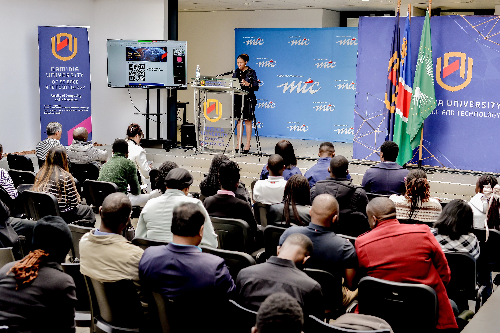

Learn AI
Gain practical skills in machine learning, deep learning and applied AI.
An independently organised, grassroots AI initiative bringing the ethos of the continental Deep Learning Indaba home to Namibia.
In the spirit of knowledge sharing and community growth, the Deep Learning IndabaX Namibia is a locally organised, grassroots gathering that brings the ethos of the continental Deep Learning Indaba to Namibia.
State-of-the-art technical talks, practical workshops and interactive panels combine to spark collaboration, bridge the gap between academia and industry, and empower the next generation of local tech leaders — entirely self-organised by local champions, researchers and volunteers.

Two days built to move you from curiosity to capability — whatever stage you’re at.
Gain practical skills in machine learning, deep learning and applied AI.
Connect with researchers, industry leaders and fellow AI practitioners.
Take part in hands-on workshops and practical coding sessions.
Discover opportunities and contribute to AI solutions built for Africa.
The Word "Indaba" is a Bantu phrase originating from Southern Africa, meaning a gathering or council of people. Founded in 2017, the Deep Learning Indaba is a continental movement devoted to a critical mission: Strengthening African Machine Learning. What began as a singular annual meeting has grown into a powerful network of African researchers, students, developers, and policymakers united to ensure that Africans are not just consumers of technology, but active shapers and owners of the global AI revolution.
To expand this impact beyond the annual main event, the IndabaX programme was launched in 2018 as an experiment in localised capacity building. Growing from just 13 countries in its first year, the IndabaX initiative now spans over 40 countries across the continent. By localising these intensive learning ecosystems, the IndabaX ensures that cutting-edge AI literacy, data-driven innovation, and vital conversations around digital sovereignty, ethical governance, and inclusive development are accessible to all communities, driving a continent-wide digital transformation from the ground up.
DEEP LEARNING INDABA 2026
Will take place at Pan-Atlantic University, Lagos, Nigeria. From 2-7 August 2026.
Learn more